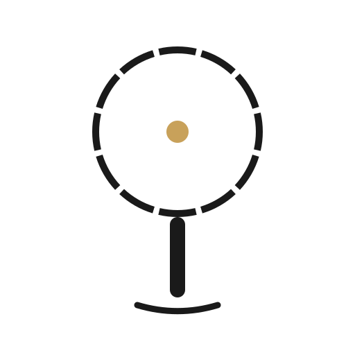
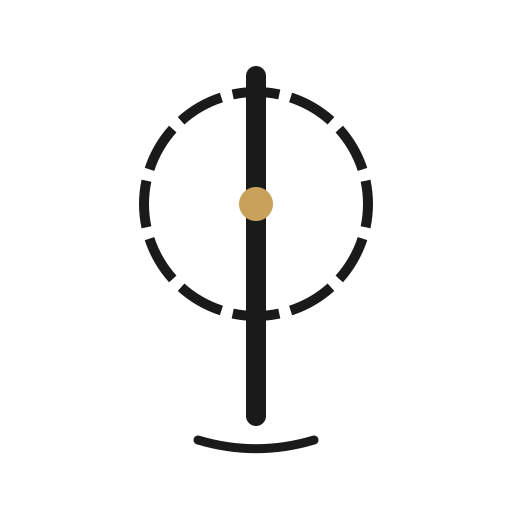

The reframe after three rejected rounds: flat geometry read spa, temple drawings read
literal. A brand mark for a temple should work like the Om works — a symbol that means, not a picture
that depicts. So the vocabulary here is the ritual, not the architecture: the axis, the wheel of
twelve, the falling drop, the receiving water, the sheltering arch. One or two thick confident strokes each,
generous emptiness, gold only at the god-points. Each row: the glyph · its meaning · a live lockup
with the shipped wordmark · 64/32/16 px unassisted · sacred night.

1 · dhvaja The name itself as geometry — Rtam-bhara: the pillar BEARS the twelve-fold wheel at a single point of contact; the Lord's point holds the centre. Also the dhvaja-stambha, the standard raised before every sanctum.
643216

2 · abhisheka The temple's daily act, not its floor plan — the cycle opens at the crown and grace falls toward the waiting water. The middle is left empty: that is where the Lord stands.
643216

3 · garbha The sanctum reduced to one gesture — the arch shelters the seed of light. It is the same dot that lives under the R of the wordmark, now inside its shrine.
643216

4 · aksha The world-axis pierces the wheel of the year — twelve golden points around it; the drop descends onto the axis and the water below receives it.
643216

5 · mudra The seal, struck like a temple coin — twelve rays of the Adityas cut into the metal around the falling drop. The ceremonial one: foil, emboss, wax.